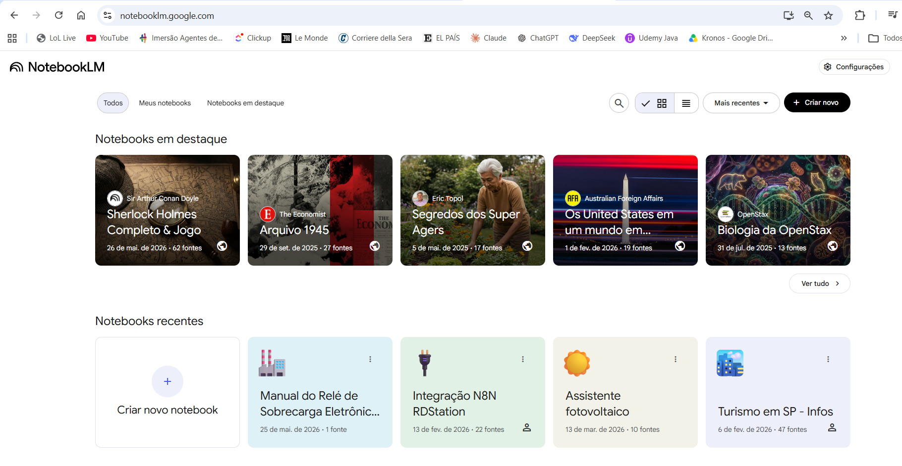
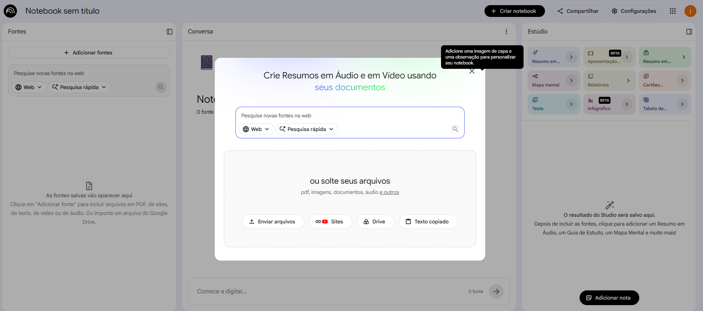
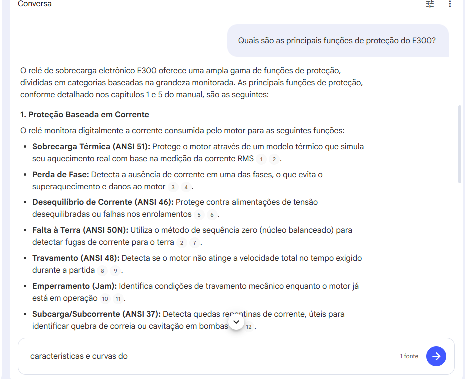
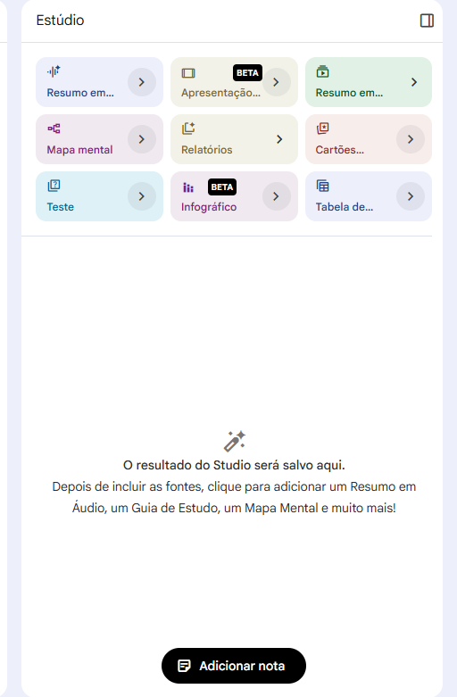
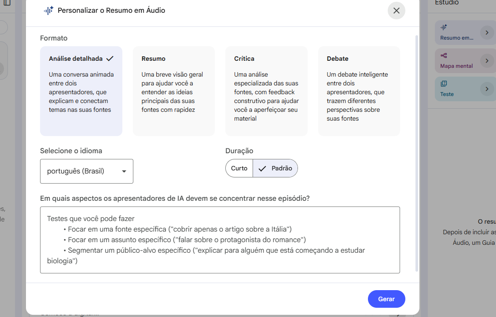
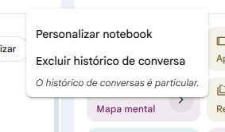
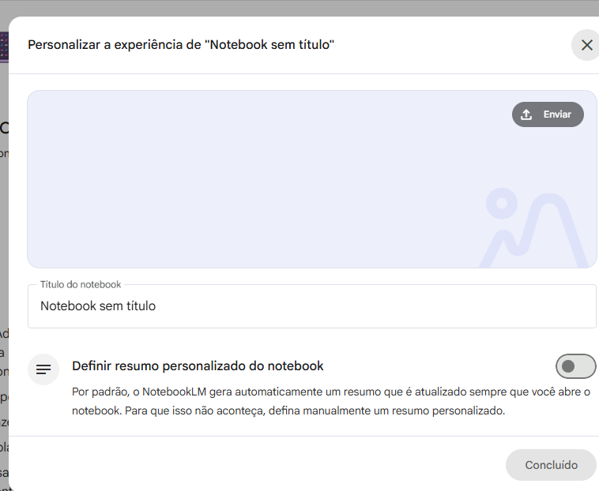
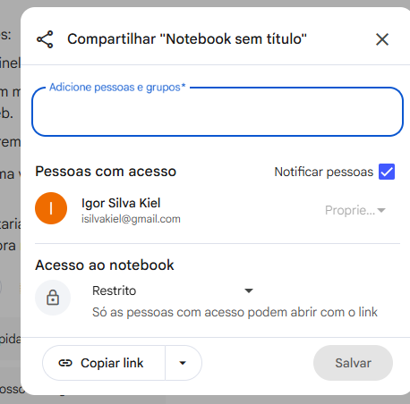

NotebookLM é uma ferramenta gratuita do Google que lê os documentos que você enviar e responde perguntas com base neles — citando o trecho exato de onde veio a resposta.
Diferente de uma busca no Google, ele não mistura fontes externas: tudo o que ele responde vem dos seus arquivos. Ideal para consultar apostilas, normas e provas antigas sem precisar ler o documento inteiro.


Digite qualquer pergunta no campo Conversa e pressione Enter. O NotebookLM responde com base nos seus documentos e marca os números das fontes usadas em cada trecho.
Clique em qualquer número de citação para ver o trecho original do documento de onde veio a informação.

O painel Estúdio (lado direito) gera materiais completos a partir das suas fontes. Clique em qualquer opção, escolha o formato e o idioma, e o resultado é salvo no notebook.

Gera um episódio de podcast com dois apresentadores de IA discutindo o conteúdo das suas fontes. Você escolhe:
- Formato — análise detalhada, resumo rápido, crítica ou debate
- Idioma — português (Brasil) disponível
- Duração — curto ou padrão
- Foco — campo livre para direcionar o episódio para um tema específico

Clique no menu ⋮ no canto superior do notebook para acessar as opções de personalização.


Clique em Compartilhar no canto superior direito para dar acesso ao notebook a outras pessoas.
- Adicionar pessoas — acesso individual por e-mail
- Copiar link — envia o link para quem tiver acesso
- Acesso restrito — só quem você adicionou consegue abrir